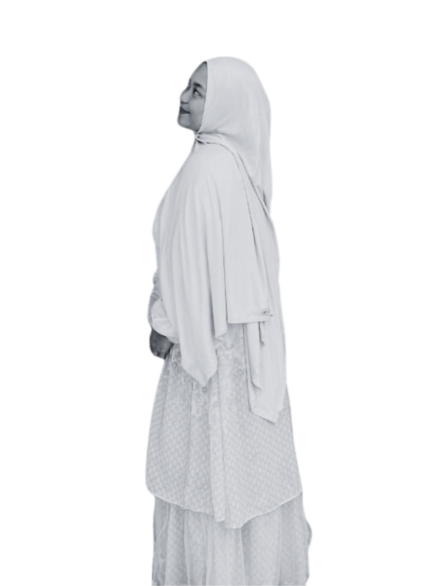
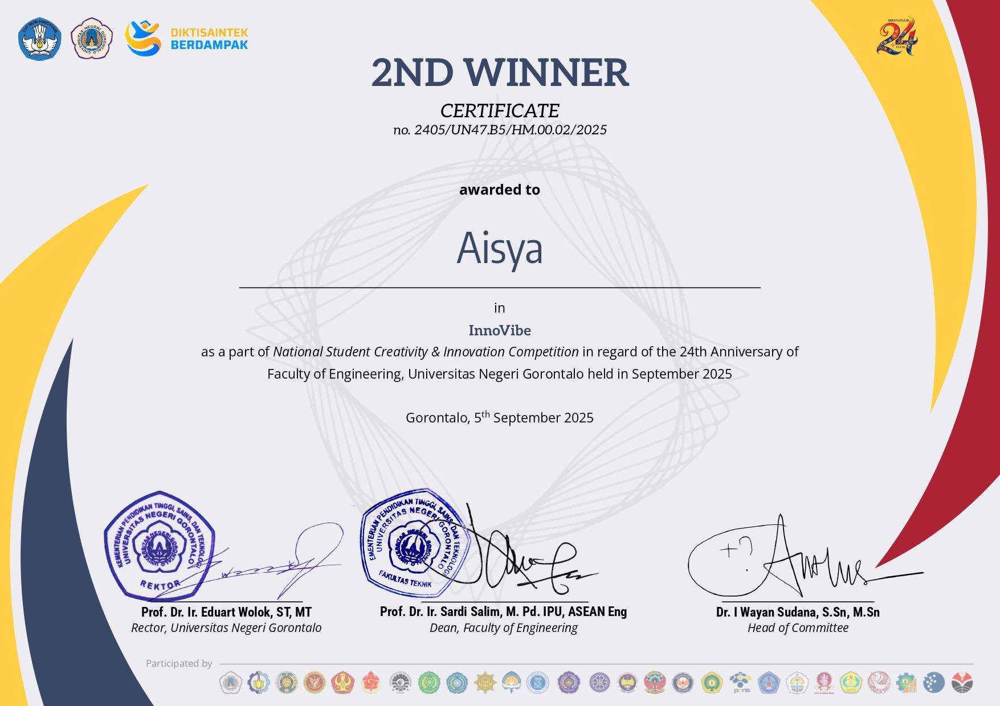
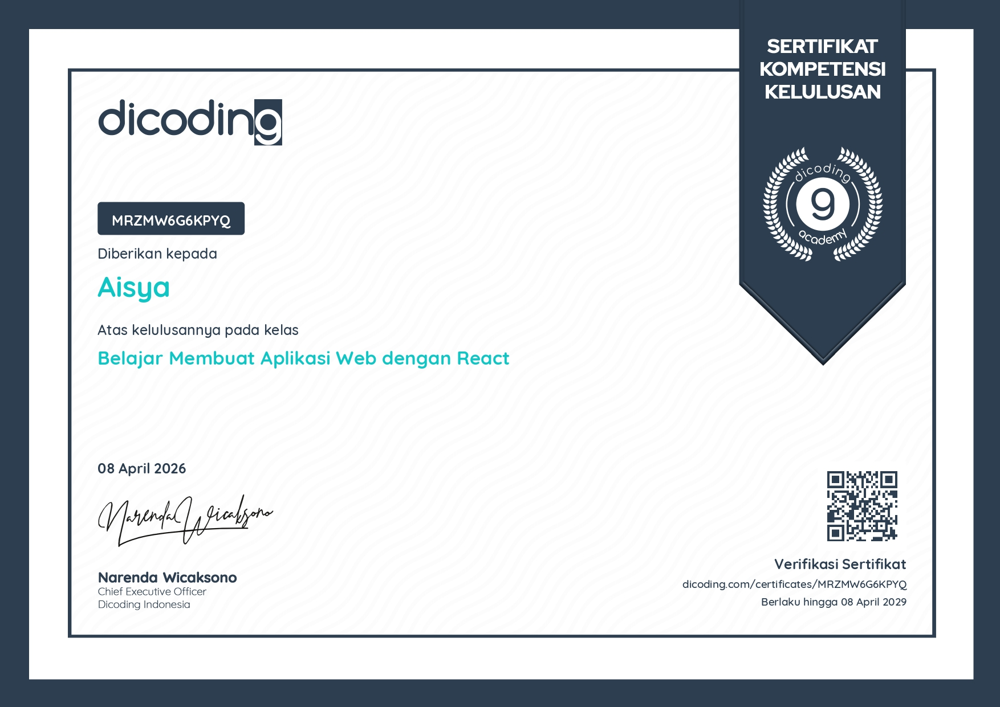

AIC

Scroll untuk melihat pencapaian dan proyek saya.
Membangun solusi digital melalui desain UI/UX dan pengembangan aplikasi web yang inovatif.
Saya adalah seorang desainer visual dan pengembang web yang berfokus pada penciptaan pengalaman digital yang minimalis namun berdampak besar. Dengan latar belakang seni rupa dan teknologi, saya percaya bahwa desain yang baik bukan hanya soal tampilan, tapi juga bagaimana ia berfungsi dan menyampaikan pesan.
Keahlian saya mencakup: UI/UX Design, Web Development (HTML/CSS/JS), Tipografi, dan Branding.
Membuat web aplikasi pelaporan KBM yang dapat diakses oleh 3 jenis pengguna (Admin, Dosen, Kajur). Bertanggung jawab penuh pada bagian UI/UX Design.

Mempelajari tentang Front End dalam membuat sebuah website menggunakan bahasa pemrograman html, css dan javascript
Mempelajari tentang bagaimana cara membuat sebuah aplikasi web dengan react menggunakan Node.js

Mempelajari secara fundamental tentang bagaimana cara membuat sebuah aplikasi web dengan react menggunakan Node.js